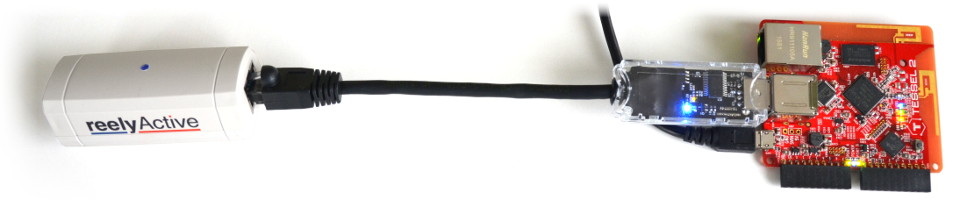

In order for reelceivers to communicate their data over a network and/or the Internet, they need to connect via a hub.
A Tessel hub provides power to the reelceivers and converts their serial data packets into IP data packets using our open source software for Node.js. In this tutorial, we'll show you how to put these all together!
You'll need a Tessel 2 and our minimal starter kit, both of which can be purchased by following the links below. If you prefer to get your hands dirty with the reelyActive kit, you can also Build your own USB Hub and purchase the reelceiver.
Buy a Tessel 2 Buy a Starter Kit
If you don't already have Node.js installed, be sure to do so first! Installation is easy on all platforms.
All the code and instructions required to get the Tessel hub up and running, and streaming data to a remote server, are included in our tessel-relay project on GitHub.
Our starter kits include a three-month trial of our Pareto platform which is the easiest way to put your data to good use. Also, if you build your own unique hub and would like to share your project, please get in touch!